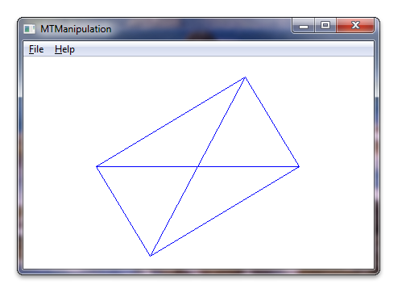

title: Windows Touch Manipulation Sample (MTManipulation) description: This section describes the Windows Touch Manipulation sample. ms.assetid: 59b9279c-ffa3-42c3-a01f-3ea7aca8f235 keywords:
This section describes the Windows Touch Manipulation sample.
The Windows Touch Manipulation sample demonstrates how to translate, rotate, and scale an object using the IManipulationProcessor interface and implementing an _IManipulationEvents event sink. The following screen shot shows how the sample looks when it is running.

For this sample, a CDrawingObject class is created that can be programmatically translated, rotated, or scaled. An IManipulationProcessor interface is instantiated. A manipulation event sink is created that accepts a pointer to the CDrawingObject class and the IManipulationProcessor interface on its constructor. A connection point to the IManipulationProcessor is created in the manipulation event sink implementation so that events raised by the IManipulationProcessor are received by the event sink. Touch data is fed to the IManipulationProcessor interface and the interface will then raise _IManipulationEvent events. The event handlers in the CManipulationEventSink class will update the orientation of the CDrawingObject by calling accessors on the pointer to the CDrawingObject.
The following code shows how the window is set up for touch and how the CDrawingObject and IManipulationProcessor are instantiated and passed to the CManipulationEventSink constructor.
CDrawingObject g_cRect; // CDrawingObject class holds information about the rectangle
// and it is responsible for painting the rectangle.
(...)
BOOL InitInstance(HINSTANCE hInstance, int nCmdShow)
{
(...)
// Register application window for receiving multi-touch input. Use default settings.
if (!RegisterTouchWindow(hWnd, 0))
{
MessageBox(hWnd, L"Cannot register application window for multi-touch input", L"Error", MB_OK);
return FALSE;
}
ASSERT(IsTouchWindow(hWnd, NULL));
// Instantiate the ManipulationProcessor object
HRESULT hr = CoCreateInstance(__uuidof(ManipulationProcessor), NULL, CLSCTX_ALL, IID_PPV_ARGS(&g_pIManipProc));
if (FAILED(hr))
{
ASSERT(SUCCEEDED(hr) && L"InitInstance: failed to instantiate the ManipulationProcessor object");
return FALSE;
}
// Instantiate the event sink with the manipulation processor and pointer to the rectangle object
g_pManipulationEventSink = new CManipulationEventSink(&g_cRect);
if (g_pManipulationEventSink == NULL)
{
ASSERT(g_pManipulationEventSink && L"InitInstance: failed to instantiate the CManipulationEventSink class");
g_pIManipProc->Release();
g_pIManipProc = NULL;
return FALSE;
}
// Establish the link between ManipulationEventSink and ManipulationProcessor
if (!g_pManipulationEventSink->Connect(g_pIManipProc))
{
ASSERT(FALSE && L"InitInstance: failed to connect ManipulationEventSink and ManipulationProcessor");
g_pIManipProc->Release();
g_pIManipProc = NULL;
g_pManipulationEventSink->Release();
g_pManipulationEventSink = NULL;
return FALSE;
}
The following code shows the constructor for the manipulation event sink, CManipulationEventSink.
CManipulationEventSink::CManipulationEventSink(CDrawingObject* pcDrawingObject)
: m_cRefCount(1),
m_pConnection(NULL),
m_dwCookie(0),
m_pcDrawingObject(pcDrawingObject)
{
ASSERT((pcDrawingObject != NULL) && L"CManipulationEventSink constructor: incorrect argument");
}
The following code shows how the event sink is connected to the manipulation processor.
bool CManipulationEventSink::Connect(IManipulationProcessor* pManipulationProcessor)
{
// Check input arguments
if (pManipulationProcessor == NULL)
{
ASSERT((pManipulationProcessor != NULL) && L"CManipulationEventSink::Create : incorrect arguments");
return false;
}
// Check object state
if ((m_dwCookie != 0) || (m_pConnection != NULL))
{
ASSERT((m_dwCookie == 0) && (m_pConnection == NULL) && L"CManipulationEventSink::Connect : connection already established");
return false;
}
// Get the container with the connection points.
IConnectionPointContainer* pConnectionContainer = NULL;
HRESULT hr = pManipulationProcessor->QueryInterface(&pConnectionContainer);
if (FAILED(hr))
{
ASSERT(SUCCEEDED(hr) && L"CManipulationEventSink::Connect : failed to get the container with the connection points");
return false;
}
// Get a connection point.
hr = pConnectionContainer->FindConnectionPoint(__uuidof(_IManipulationEvents), &m_pConnection);
if (FAILED(hr))
{
ASSERT(SUCCEEDED(hr) && L"CManipulationEventSink::Connect : failed to get a connection point");
pConnectionContainer->Release();
return false;
}
// Release the connection container.
pConnectionContainer->Release();
// Advise. Establishes an advisory connection between the connection point and the
// caller's sink object.
hr = m_pConnection->Advise(this, &m_dwCookie);
if (FAILED(hr))
{
ASSERT(SUCCEEDED(hr) && L"CManipulationEventSink::Connect : failed to Advise");
m_pConnection->Release();
m_pConnection = NULL;
return false;
}
return true;
}
The following code shows how touch data is passed to the manipulation event sink.
LRESULT CALLBACK WndProc(HWND hWnd, UINT message, WPARAM wParam, LPARAM lParam)
{
(...)
switch (message)
{
(...)
// WM_TOUCH message handlers
case WM_TOUCH:
{
// WM_TOUCH message can contain several messages from different contacts
// packed together.
// Message parameters need to be decoded:
UINT cInputs = (int) wParam; // Number of actual per-contact messages
TOUCHINPUT* pInputs = new TOUCHINPUT[cInputs]; // Allocate the storage for the parameters of the per-contact messages
if (pInputs == NULL)
{
break;
}
// Unpack message parameters into the array of TOUCHINPUT structures, each
// representing a message for one single contact.
if (GetTouchInputInfo((HTOUCHINPUT)lParam, cInputs, pInputs, sizeof(TOUCHINPUT)))
{
// For each contact, dispatch the message to the appropriate message
// handler.
for (unsigned int i = 0; i < cInputs; i++)
{
if (pInputs[i].dwFlags & TOUCHEVENTF_DOWN)
{
g_pIManipProc->ProcessDown(pInputs[i].dwID, (FLOAT)pInputs[i].x, (FLOAT)pInputs[i].y);
}
else if (pInputs[i].dwFlags & TOUCHEVENTF_MOVE)
{
g_pIManipProc->ProcessMove(pInputs[i].dwID, (FLOAT)pInputs[i].x, (FLOAT)pInputs[i].y);
}
else if (pInputs[i].dwFlags & TOUCHEVENTF_UP)
{
g_pIManipProc->ProcessUp(pInputs[i].dwID, (FLOAT)pInputs[i].x, (FLOAT)pInputs[i].y);
}
}
}
else
{
// error handling, presumably out of memory
ASSERT(FALSE && L"Error: failed to execute GetTouchInputInfo");
delete [] pInputs;
break;
}
if (!CloseTouchInputHandle((HTOUCHINPUT)lParam))
{
// error handling, presumably out of memory
ASSERT(FALSE && L"Error: failed to execute CloseTouchInputHandle");
delete [] pInputs;
break;
}
delete [] pInputs;
// Force redraw of the rectangle
InvalidateRect(hWnd, NULL, TRUE);
}
break;
The following code shows how the event handlers update the object orientation and size on manipulation delta events.
HRESULT STDMETHODCALLTYPE CManipulationEventSink::ManipulationDelta(
/* [in] */ FLOAT /* x */,
/* [in] */ FLOAT /* y */,
/* [in] */ FLOAT translationDeltaX,
/* [in] */ FLOAT translationDeltaY,
/* [in] */ FLOAT scaleDelta,
/* [in] */ FLOAT /* expansionDelta */,
/* [in] */ FLOAT rotationDelta,
/* [in] */ FLOAT /* cumulativeTranslationX */,
/* [in] */ FLOAT /* cumulativeTranslationY */,
/* [in] */ FLOAT /* cumulativeScale */,
/* [in] */ FLOAT /* cumulativeExpansion */,
/* [in] */ FLOAT /* cumulativeRotation */)
{
m_pcDrawingObject->ApplyManipulationDelta(translationDeltaX,translationDeltaY,scaleDelta,rotationDelta);
return S_OK;
}
The following code is the implementation of ApplyManipulationDelta in the CDrawingObject class.
// This function is responsible for manipulation of the rectangle.
// It is called from CManipulationEventSink class.
// in:
// translationDeltaX - shift of the x-coordinate (1/100 of pixel units)
// translationDeltaY - shift of the y-coordinate (1/100 of pixel units)
// scaleDelta - scale factor (zoom in/out)
// rotationDelta - rotation angle in radians
void CDrawingObject::ApplyManipulationDelta(
const FLOAT translationDeltaX,
const FLOAT translationDeltaY,
const FLOAT scaleDelta,
const FLOAT rotationDelta
)
{
_ptCenter.x += (LONG) (translationDeltaX / 100.0);
_ptCenter.y += (LONG) (translationDeltaY / 100.0);
_dScalingFactor *= scaleDelta;
_dRotationAngle -= rotationDelta; // we are subtracting because Y-axis is down
}
After the CDrawingObject's center points, scale factor, and rotation angle are updated, the object will draw itself transformed.
Multi-touch Manipulation Application, Manipulation and Inertia Sample, Windows Touch Samples